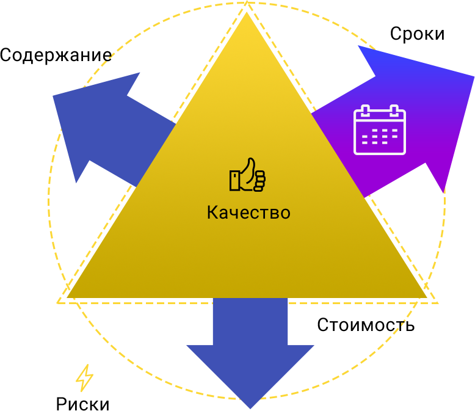

<!doctype html>
<html lang="">

<head>
  <meta charset="utf-8">
  <meta name="description" content="">
  <meta name="viewport" content="width=device-width, initial-scale=1">
  <link href="https://fonts.googleapis.com/icon?family=Material+Icons" rel="stylesheet">
  <link href="https://fonts.googleapis.com/css?family=Roboto:300,400,500&amp;subset=cyrillic" rel="stylesheet">
  <title>Example</title>

  <link rel="apple-touch-icon" href="apple-touch-icon.png">
  <!-- Place favicon.ico in the root directory -->

  <!-- build:css styles/vendor.css -->
  <!-- bower:css -->
  <!-- endbower -->
  <!-- endbuild -->

  <!-- build:css styles/main.css -->
  <link rel="stylesheet" href="styles/main.css">
  <!-- endbuild -->

</head>

<body>
  <div class="layout__container menu-mockup  inner-scroll">
    <!-- пример слайда -->
    <div class="slide  slide--theory">
        <div class="slide__left">
          <div class="layout__content">
            <div class="diagramma"></div>
            <div class="slide__info"><span>Следующей задачей</span>  после работы с содержанием продукта и проекта будет задача <span>планирования расписания</span>. Необходимо разработать расписание с учетом ограничений и исключений проекта и это расписание должно базироваться на созданной ИСР.</div>
          </div>
        </div>
        <div class="slide__right  slide__right--bg-yellow">
          <div class="slide-grafics layout__content">
            <div class="slide-grafics__quote"><span>Цитата</span></div>
            <div class="slide-grafics__pic  slide-grafics__pic--book"></div>
          </div>
          <div class="slide__info  slide__info--pt  slide__info--bg-yellow">
            <div class="layout__content  slide__inner  slide__inner--quote">
              <div class="slide__text"><b>Результатом составления расписания проекта</b> является подробный план, который содержит сведения о том, как и когда будет осуществляться поставка продуктов, услуг и результатов проекта, предусмотренных в содержании проекта, а также служит инструментов для коммуникации, управления ожиданиями заинтересованных сторон и основой для подготовки отчетности по исполнении.</div>
              <div class="slide__cite-source">PMI PMBOK Guids 6th Edition</div>
            </div>
          </div>
        </div>
    </div>

  </div>

  <div class="sidebar  "> <!-- Довавить класс sidebar--show для отображения этого блока  -->
    <div class="layout__content">
      <div class="slide__info">
        <div class="slide__info-item"><span>Существует два способа планировать сроки проекта:</span> от даты начала проекта и от даты окончания проекта. </div>
        <div class="slide__info-item">Планирование от даты начала предусматривает, что есть точка старта и нужно посчитать точку финиша, когда мы по плану должны передать продукт проекта Заказчику.</div>
        <div class="slide__info-item">Планирование от даты окончания подразумевает, что точно известна дата завершения проекта (привязана к какому-либо событию) и задача увидеть расписание, с точки зрения самого раннего момент старта, чтобы успеть вовремя.</div>
      </div>
      <div class="slide__info">
        <div class="slide__info-item"><span>«Открытие дополнительного офиса»</span> скорее всего будет планированием от даты начала. То есть задачей построения расписания будет определить, когда мы сможем начать работу нашего офиса.</div>
        <div class="slide__btn-inner  slide__btn-inner--mt  slide__btn-inner--center">
          <button class="slide-btn  slide-btn--half  slide-btn--sidebar">Празднование юбилея</button>
          <button class="slide-btn  slide-btn--half  slide-btn--sidebar">Открытие дополнительного офиса</button>
        </div>
      </div>
    </div>
  </div>

  <!-- build:js scripts/vendor.js -->
  <!-- bower:js -->
  <!-- endbower -->
  <!-- endbuild -->

  <!-- build:js scripts/main.js -->
  <script src="scripts/main.js"></script>
  <!-- endbuild -->
</body>

</html>
